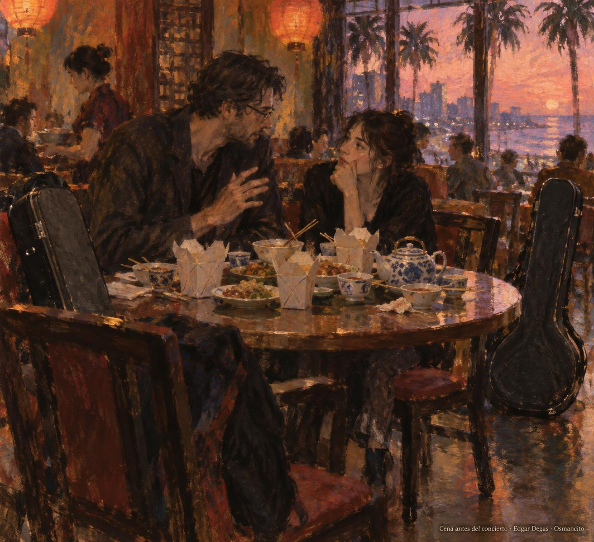
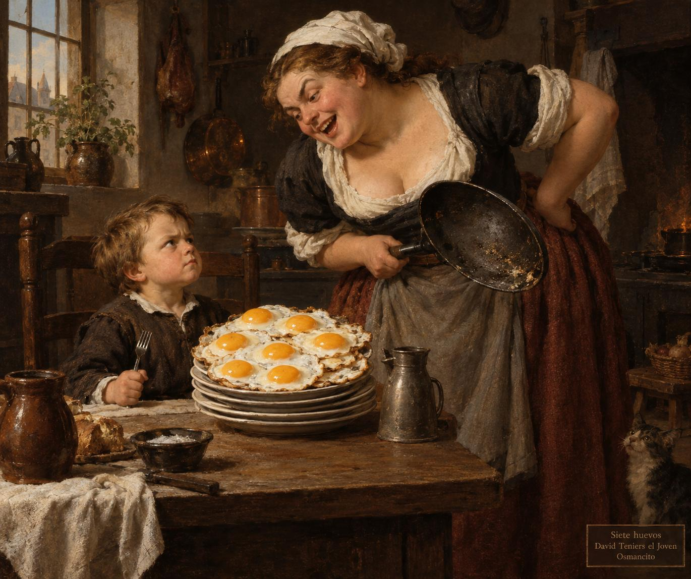
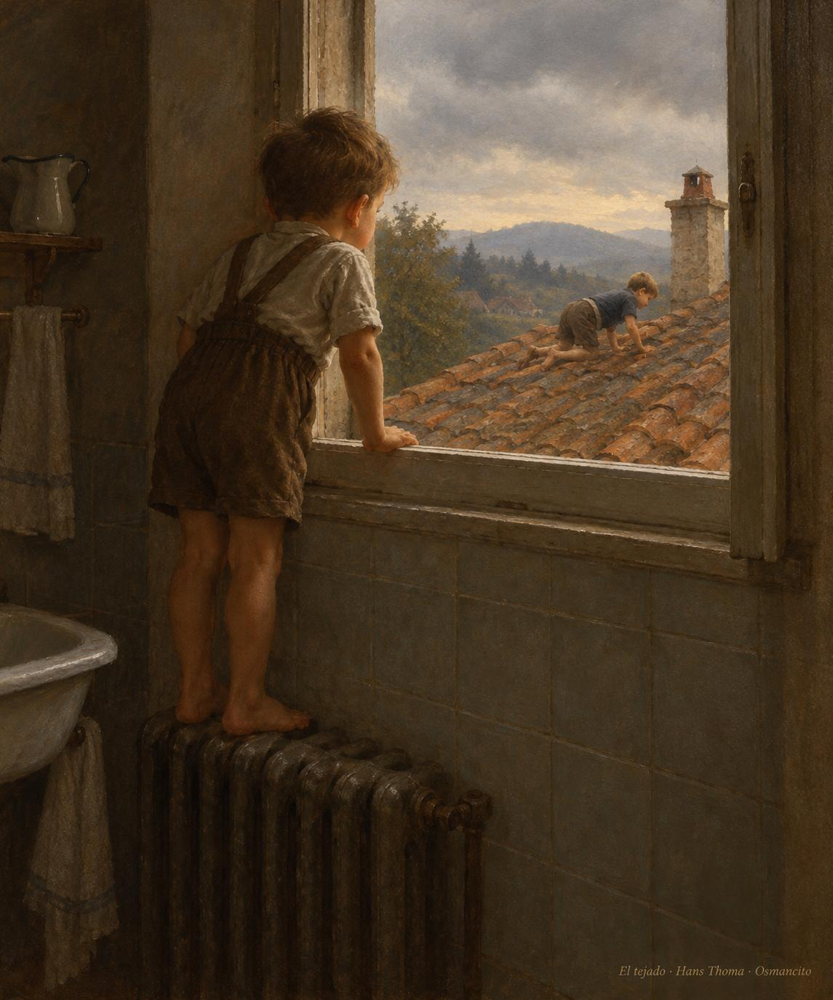

Mientras escribo

Mientras escribo es el título castellano de On Writing, el libro en que Stephen King cuenta cómo llegó al oficio y cómo se hace. Salió en el año 2000. Antes de entrar en materia trae tres prólogos cortos; después viene el cuerpo del libro: una memoria, el C.V., y luego qué es escribir, la caja de herramientas y más. Aquí lo destilamos en ese orden, empezando por lo primero que King pone en manos del lector: los prólogos.
Los prólogos
La pregunta de Amy

El primer prólogo no empieza con el libro, sino con una banda. King cuenta cómo, hace años, se metió en un grupo de rock hecho casi todo de escritores:
In the early nineties (it might have been 1992, but it’s hard to remember when you’re having a good time) I joined a rock-and-roll band composed mostly of writers.
Frase 23
A principios de los noventa (puede que fuera en 1992, pero es difícil acordarse cuando uno se lo está pasando bien) entré en una banda de rock and roll formada en su mayoría por escritores.
La banda se llamaba Rock Bottom Remainders y fue idea de Kathi Kamen Goldmark, publicista de libros y música de San Francisco. Iba a ser cosa de una vez, dos conciertos en una convención de libreros y adiós, pero nunca llegó a disolverse. Estos eran los músicos:
The group included Dave Barry on lead guitar, Ridley Pearson on bass, Barbara Kingsolver on keyboards, Robert Fulghum on mandolin, and me on rhythm guitar.
Frase 25
El grupo incluía a Dave Barry en la guitarra solista, a Ridley Pearson en el bajo, a Barbara Kingsolver en los teclados, a Robert Fulghum en la mandolina y a mí en la guitarra rítmica.
Entre las tres cantantes del grupo estaba Amy Tan. (De fuera del libro: Amy Tan es la autora de la novela The Joy Luck Club y también toca en la banda; fuente: PBS, «Amy Tan: Writer and rock musician».) La banda siguió y tocan por la música y por el compañerismo, y porque les gusta hablar del trabajo de todos los días, escribir, aunque entre escritores nunca se preguntan de dónde sacan las ideas, porque saben que no lo saben. Y en una de esas noches pasó lo que dio origen al libro:
One night while we were eating Chinese before a gig in Miami Beach, I asked Amy if there was any one question she was never asked during the Q-and-A that follows almost every writer’s talk—that question you never get to answer when you’re standing in front of a group of author-struck fans and pretending you don’t put your pants on one leg at a time like everyone else.
Frase 37
Una noche, mientras comíamos comida china antes de un concierto en Miami Beach, le pregunté a Amy si había alguna pregunta que nunca le hicieran en el turno de preguntas y respuestas que sigue a casi todas las charlas de un escritor: esa pregunta que nunca llegas a contestar cuando estás de pie ante un grupo de fans deslumbrados por el autor y fingiendo que no te pones los pantalones de una pierna a la vez, como todo el mundo.
El Q-and-A (de questions and answers) es el turno de preguntas del público al final de una charla. Fingir que uno no se pone los pantalones de una pierna a la vez es fingir que uno no es una persona como las demás.
Amy lo pensó con calma y contestó: «No one ever asks about the language», nadie pregunta nunca por el lenguaje. King le debe una deuda enorme de gratitud. Llevaba un año o más con la idea de un librito sobre escribir, pero dudaba de sus propios motivos: ¿qué le hacía pensar que tenía algo que decir? La respuesta fácil, haber vendido tantos libros de ficción, no le bastaba, y no quería escribir un libro que lo dejara como un palabrero literario. Amy tenía razón: a los novelistas de prestigio, como DeLillo, Updike y Styron, se les pregunta; a los populares, como él, no, aunque también les importa el lenguaje y el arte de contar historias. Lo que sigue, dice, es un intento de contar con sencillez cómo llegó al oficio, qué sabe de él y cómo se hace: trata del trabajo de todos los días y del lenguaje. Y cierra el prólogo así:
This book is dedicated to Amy Tan, who told me in a very simple and direct way that it was okay to write it.
Frase 52
Este libro está dedicado a Amy Tan, que me dijo de una manera muy simple y directa que estaba bien escribirlo.
Los otros dos prólogos son más cortos. El segundo dice que este es un libro corto porque casi todos los libros sobre escribir están llenos de bullshit, la palabra que usa para la paja. Hace una excepción: The Elements of Style, de William Strunk Jr. y E. B. White, que tiene ochenta y cinco páginas y casi nada de paja. Su regla 17 es «Omit needless words»: omite las palabras que sobran. King promete: «I will try to do that here», intentaré hacerlo aquí. El tercero es una nota breve para su editor: hay una regla del camino que el libro no dice en otro sitio, «el editor siempre tiene la razón», y ningún escritor sigue todos los consejos del suyo, pero escribir es humano y editar es divino. Chuck Verrill editó este libro, como tantas novelas de King, y el prólogo cierra con un agradecimiento: «Y como siempre, Chuck, estuviste divino». Lo firma «Steve». Después de los prólogos empieza el libro, con el C.V.
C.V.
El paisaje con niebla

King se quedó pasmado con The Liars' Club, las memorias de la poeta americana Mary Karr: ella lo recuerda todo de su infancia. Él no. La suya fue a tirones, con una madre sola y quizá una temporada en casa de una tía:
Perhaps she was only chasing our father, who piled up all sorts of bills and then did a runout when I was two and my brother David was four.
Frase 75
Quizá solo perseguía a nuestro padre, que amontonó deudas de todas clases y luego se esfumó cuando yo tenía dos años y mi hermano David cuatro.
Mary Karr es poeta y memorista: The Liars' Club, «el club de los mentirosos», salió en 1995, pasó más de un año entre los más vendidos del New York Times y le devolvió la moda al género. «Did a runout» es el americano para largarse sin aviso y no volver. El libro no da el nombre del padre; las biografías lo llaman Donald Edwin King.
Nunca lo encontró. La madre, Nellie Ruth Pillsbury King, fue de las primeras mujeres liberadas de América, y no por gusto. Donde Karr tiene un panorama sin cortes, King tiene un paisaje con niebla del que asoman árboles que parecen querer comerte. Avisa, eso sí: esto no es autobiografía, es curriculum vitae.
This is how it was for me, that’s all—a disjointed growth process in which ambition, desire, luck, and a little talent all played a part.
Frase 87
Así fue para mí, eso es todo: un proceso de crecimiento desordenado en el que la ambición, el deseo, la suerte y un poco de talento jugaron su papel.
El curriculum vitae es el papel donde uno cuenta sus estudios y sus oficios; King juega con eso: esto es el C.V. de un escritor, no la historia de su vida.
Pide no buscar una línea que una los puntos: no hay líneas, solo instantáneas, la mayoría desenfocadas.
El niño forzudo

Su primer recuerdo es imaginarse otro: el Forzudo del circo Ringling Brothers, en casa de la tía Ethelyn y el tío Oren, en Durham, Maine. Tiene dos años y medio, quizá tres. Levantó un bloque de cemento del garaje y lo cargó despacio, pero en su mente vestía piel de leopardo y cruzaba la pista central: la multitud en silencio, un foco marcando su paso. «¡Y solo tiene dos años!». Lo que no sabía: unas avispas anidaban en el bloque, y una le picó la oreja. Fue el peor dolor de su corta vida, por unos segundos:
When I dropped the cinderblock on one bare foot, mashing all five toes, I forgot all about the wasp.
Frase 103
Cuando dejé caer el bloque de cemento sobre un pie descalzo, machacándome los cinco dedos, me olvidé por completo de la avispa.
«Cinderblock» es el bloque hueco de cemento de la construcción americana, pesado y con cavidades donde anidan insectos. El Ringling Brothers fue el circo más famoso de Estados Unidos, y su Strongboy, el forzudo, levantaba pesas en la pista central. Durham es un pueblo de Maine.
Al soltarlo, la avispa dejó de existir:
I can’t remember if I was taken to the doctor, and neither can my Aunt Ethelyn (Uncle Oren, to whom the Evil Cinderblock surely belonged, is almost twenty years dead), but she remembers the sting, the mashed toes, and my reaction.
Frase 104
No recuerdo si me llevaron al médico, y mi tía Ethelyn tampoco (el tío Oren, a quien sin duda pertenecía el Maligno Bloque de Cemento, lleva muerto casi veinte años), pero ella sí recuerda la picadura, los dedos machacados y mi reacción.
«The Evil Cinderblock», con mayúsculas de villano de cuento, es broma de familia: el bloque era del tío Oren, y en su haber quedaron la picadura y los dedos machacados.
La tía Ethelyn cierra la anécdota en broma, hablando con él: «¡Cómo aullaste, Stephen!». Y sentencia que aquel día estaba «ciertamente en plena voz» — «in fine voice», como se dice de un cantante en su mejor noche.
Siete huevos

Un año o poco más después de la escena del bloque de cemento, King, su madre y su hermano David, dos años mayor que él, están en West De Pere, Wisconsin. No sabe por qué. Quizá su madre se mudó para estar cerca de Cal, otra de sus hermanas, que vivía allí con un marido amigo de la cerveza; pero de los Weimer, que parecen ser la familia de Cal (el libro no lo dice con esas palabras), no recuerda haber visto mucho. Su madre trabajaba, y tampoco recuerda en qué. Lo que sí recuerda es una fila de niñeras: no sabe si se iban porque David y él daban guerra o porque encontraban mejor sueldo, pero eran muchas. La única que recuerda con claridad es Eula, o quizá Beulah, así que la llama Eula-Beulah: adolescente, enorme y de risa fácil. Tenía un humor magnífico y peligroso: en cada estallido de risa, entre palmaditas y balanceos de trasero, parecía esconderse un trueno. Lo abrazaba, le hacía cosquillas y, riendo, le soltaba un golpe en la cabeza capaz de tirarlo. Y cuando se le escapaba uno de sus pedos, fuertes y malolientes, lo lanzaba al sofá, le sentaba encima de la cara su trasero de falda de lana y lo soltaba. «¡Pow!», gritaba ella, feliz. King recuerda la oscuridad, la asfixia y que se reía, porque lo que pasaba era horrible, pero también gracioso. De ahí su conclusión: en cierto modo, Eula-Beulah lo preparó para la crítica literaria:
After having a two-hundred-pound babysitter fart on your face and yell Pow!, The Village Voice holds few terrors.
Frase 134
Después de que una niñera de doscientas libras te suelte un pedo en la cara y grite «¡Pow!», The Village Voice ya no inspira muchos terrores.
The Village Voice fue un semanario de Nueva York, el primero que se llamó «alternativo», conocido por su cultura y su crítica; es dato de fuera del libro (fuente: Wikipedia, The Village Voice).
De las otras niñeras no sabe qué fue, pero a Eula-Beulah la despidieron, y fue por los huevos:
One morning Eula-Beulah fried me an egg for breakfast.
Frase 137
Una mañana Eula-Beulah me frió un huevo para el desayuno.
Se lo comió y pidió otro.
Eula-Beulah fried me a second egg, then asked if I wanted another one.
Frase 139
Eula-Beulah me frió un segundo huevo y luego me preguntó si quería otro.
Ella tenía una mirada:
She had a look in her eye that said, “You don’t dare eat another one, Stevie.”
Frase 140
Tenía en los ojos una mirada que decía: «No te atreves a comerte otro, Stevie».
Pidió otro. Y otro, y así. Se detuvo en siete, cree; siete es el número que se le quedó clavado. Quizá se acabaron los huevos, quizá se rindió él, quizá ella se asustó; no lo sabe, pero fue bueno que el juego terminara en siete, que son muchos para un niño de cuatro años. Se sintió bien un rato y luego vomitó por todo el suelo. Eula-Beulah se rió, le pegó en la cabeza y lo encerró en el armario con llave. Él no lo vivió mal: estaba oscuro, pero olía al perfume Coty de su madre y había una raya de luz bajo la puerta. Se arrastró al fondo, entre los abrigos y vestidos de su madre, empezó a eructar, largos eructos que ardían como fuego, y al abrir la boca para otro volvió a vomitar, esta vez sobre los zapatos de su madre. Ese fue el final de Eula-Beulah. Y esta es la escena que encontró su madre al volver:
When my mother came home from work that day, the babysitter was fast asleep on the couch and little Stevie was locked in the closet, fast asleep with half-digested fried eggs drying in his hair.
Frase 160
Cuando mi madre volvió del trabajo ese día, la niñera dormía profundamente en el sofá y el pequeño Stevie estaba encerrado en el armario, profundamente dormido, con huevos fritos a medio digerir secándose en su pelo.
«Stevie» es el diminutivo de Stephen con que lo llama Eula-Beulah; «yarked», la palabra que King usa para vomitar, es coloquial en inglés americano.
El tejado

La temporada en West De Pere no fue ni larga ni buena: los echaron del apartamento del tercer piso, porque un vecino vio a David, el hermano de King, gateando por el tejado con sus seis años, y llamó a la policía. King no sabe dónde estaba su madre cuando pasó, ni dónde estaba la niñera de la semana. Solo sabe dónde estaba él:
I only know that I was in the bathroom, standing with my bare feet on the heater, watching to see if my brother would fall off the roof or make it back into the bathroom okay.
Frase 165
Solo sé que yo estaba en el baño, de pie con los pies descalzos sobre el radiador, mirando para ver si mi hermano se caía del tejado o lograba volver al baño sano y salvo.
El «heater» es el radiador de la calefacción, esa plancha de hierro con tubos que calienta el cuarto; un niño descalzo se para encima para calentarse los pies. «Make it back» es el americano para lograr volver: el «it» no es nada, va pegado al verbo.
David no se cayó: volvió al baño por su propio pie. Hoy tiene cincuenta y cinco años y vive en New Hampshire, el estado vecino de Maine, al noreste de Estados Unidos.
© 2026 Osmancito